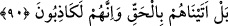

Allah’ındır. O her şeyi koruyup kollayan, fakat kendisi korunmayan, buna muhtaç
olmayandır. “diyecekler. Öyle ise nasıl olup da büyüye kapılıyorsunuz?” yâni öyleyse
nasıl oluyor da aldatılıyor ve bildiğiniz halde doğruluktan içinde bulunduğunuz
sapıklığa çevriliyorsunuz. “de.” Çünkü büyülenmemiş ve aklı bozuk olmayan kimse
böyle olmaz. Aldatan ise şeytan ve hevâdır.
Ey nefsinin ve hevâsının peşinden giden
Doğru olan yol budur, sen yanlış yerde gidiyorsun
Hak yolunun yolcuları bir başka yoldan giderler
Öyle ise sen niçin bu yoldan gidersin?
Maksud olan menzil o taraftandır
Peki sen bu taraftan nereye gidiyorsun?
90. Doğrusu biz onlara hakkı getirdik; onlar ise hakikaten yalancılardır.
“Doğrusu biz onlara hakkı” tevhidi ve tekrar diriltilme (ba‘s) vaadini “getirdik;
onlar ise” Allah’ın ortağı olduğunu söylemeleri ve öldükten sonra yeniden diriltilmeyi
inkâr etmeleri gibi hususlarda “hakikaten yalancılardır.”
Allah, bahâneler ortadan kaldırıldıktan sonra onların inkârlarında ısrar ettiklerini,
serkeşlik ve muhâlefetlerine devam ettiklerini beyan etmiştir. Artık ve özür ileri sürme
vakti geçmiştir. Müsamaha göstermenin imkan dahilinde olması, bunu Allah için zorunlu
kılmaz. Nitekim Allah onlardan intikam almıştır. Çünkü O mühlet verir, fakat ihmal
etmez.
Sokrat der ki: “Dünya ehli sayfadaki satırlar gibidir. Onların bazısı açılıp yayılınca
bazısı dürülüp kapanır.”
İbn Abbâs (r. anhümâ)’nın şöyle dediği nakledilmiştir: “Dünya, âhiret haftalarından
bir haftadır. Çoğu gidip azı kalmıştır. Dünyanın üzerine yüzlerce sene gelecek de onun
üzerinde muvahhidler/tevhid ehli olmayacak. Burada kasdedilen âhir zamandır. Saîd ve
şakî herkes ebedî olarak kalmaz. Ölür, sonra tekrar diriltilir ve yaptıklarının karşılığını
görür.
Mesnevî’de der ki:
Allah, toprağı, spermi ve et parçasını
Gözümüzün önünde tutarak [âdeta şöyle der]:
Ey kötü niyetli! Seni nereden meydana getirdim gör!
Şimdi o sana tiksinti veriyor
Sen o dönemde ona âşık idin
Şu anki üstün konumunu o zaman inkâr ediyordun